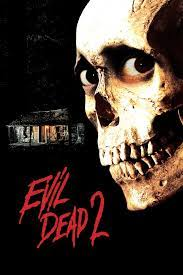
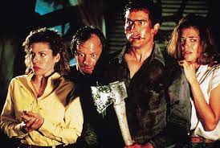
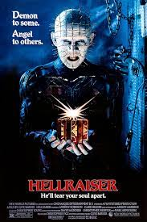
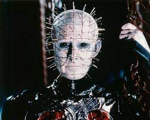
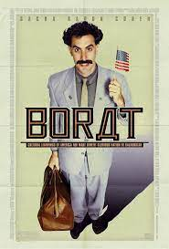
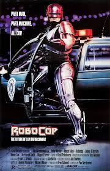
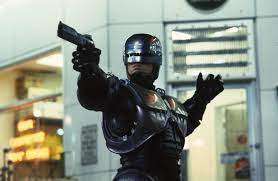

Starring: Kurt Russell, Wilford Brimley,
Keith David
+ Watch Later

🍌 7.7
2. Evil Dead 2

Evil Dead 2
Genres: Horror
Duration: 1h24m
Director: Sam Raimi
Starring: Bruce Campbell, Sarah Berry,
Dan Hicks
+ Watch Later

🍌 6.9
3. Hellraiser

Hellraiser
Genres: Horror, Thriller
Duration: 1h34m
Director: Clive Barker
Starring: Andrew Robinson, Clare Higgins,
Ashley Laurence
+ Watch Later

🍌 7.4
4. Borat
Borat
Genres: Comedy
Duration: 1h24m
Director: Larry Charles
Starring: Sacha Baron Cohen, Anthony Hines,
Peter Baynham
+ Watch Later

🍌 7.6
5. Robocop

Robocop
Genres: Action, Thriller, Sci-Fi
Duration: 1h42m
Director: Paul Verhoeven
Starring: Peter Weller, Nancy Allen,
Dan O'Herlihy
+ Watch Later
Genres: Horror, Mystery, Sci-Fi
Duration: 1h49m
Director: John Carpenter
Starring: Kurt Russell, Wilford Brimley,
Keith David
The Thing
A US research station, Antarctica, early-winter 1982. The base is
suddenly buzzed by a helicopter from the nearby Norwegian research
station. They are trying to kill a dog that has escaped from their
base. After the destruction of the Norwegian chopper the members of
the US team fly to the Norwegian base, only to discover them all dead
or missing. They do find the remains of a strange creature the
Norwegians burned. The Americans take it to their base and deduce that
it is an alien life form. After a while it is apparent that the alien
can take over and assimilate into other life forms, including humans,
and can spread like a virus.
Genres: Horror
Duration: 1h24m
Director: Sam Raimi
Starring: Bruce Campbell, Sarah Berry,
Dan Hicks
Evil Dead 2
Ashley Williams travels to a secluded cabin in the woods with his
girlfriend Linda where they find a tape recording of a professor and a
book of evil. This unleashes a bunch of evil spirits that constantly
terrorize Ash. Meanwhile a journalist comes to the area to study the
book of evil. Ash and her end up having to survive this swarm of evil
until morning comes.
Genres: Horror, Thriller
Duration: 1h34m
Director: Clive Barker
Starring: Andrew Robinson, Clare Higgins,
Ashley Laurence
Hellraiser
When Kirsty's father, Larry, and stepmother, Julia, move into Larry's
childhood home, Kirsty and her boyfriend take a room nearby.
Unfortunately for all involved, Larry's house is already occupied:
before the family's arrival, Larry's disreputable brother, Frank, used
a supernatural puzzle box to summon a gang of other-dimensional demon
sadists. Now, Frank requires a series of blood sacrifices to escape
the clutches of Pinhead and the cenobites.
Genres: Comedy
Duration: 1h24m
Director: Larry Charles
Starring: Sacha Baron Cohen, Anthony Hines,
Peter Baynham
Borat
Borat Sagdiyev is a TV reporter of a popular show in Kazakhstan as
Kazakhstan's sixth most famous man and a leading journalist. He is
sent from his home to America by his government to make a documentary
about American society and culture. Borat takes a course in New York
City to understand American humor. While watching Baywatch on TV,
Borat discovers how beautiful their women are in the form of C. J.
Parker, who was played by actress Pamela Anderson who hails from
Malibu, California. He decides to go on a cross-country road trip to
California in a quest to make her his wife and take her back to his
country.
Genres: Action, Thriller, Sci-Fi
Duration: 1h42m
Director: Paul Verhoeven
Starring: Peter Weller, Nancy Allen,
Dan O'Herlihy
Robocop
In a violent, near-apocalyptic Detroit, evil corporation Omni Consumer
Products wins a contract from the city government to privatize the
police force. To test their crime-eradicating cyborgs, the company
leads street cop Alex Murphy into an armed confrontation with crime
lord Boddicker so they can use his body to support their untested
RoboCop prototype. But when RoboCop learns of the company's nefarious
plans, he turns on his masters.